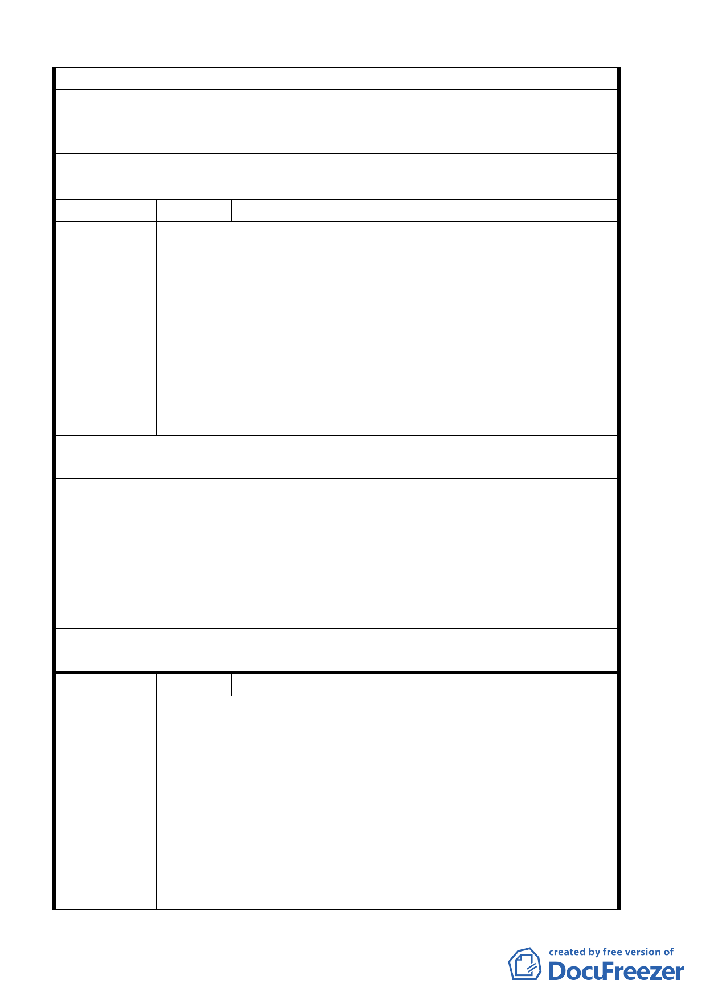

二、或由國立藝術學院徵收，並部分開發為里鄰公園。
專 案 小組
結論
93.6.10 專案小組第五次審查會議：同意發展局提案，因坡度
過於陡峭，並經目的事業主管機關認定無開闢需要，變更為保
護區。
委 員 會 議 同意依專案小組審查結論辦理。
決議
編 號 ７ 陳情人 陳榮發等 29 人
建 議 位 置：（山限區）、土地標示：北投區桃園段 五 小段
302、306、308、329、331、332、333、371、372、373、374、
376 地號中央北四段北側、一心路西側。
建議理由：本里山限區內土地多為共有持有，且多為平坦地，
陳情理由
早為旱田及古厝；今受二萬平方米開發及住二低密度住宅限
制，而一直無法開發使用，造成地方發展極為落後，生活品質
無法提高，很為髒亂，且有部分地區同一道路東西兩側一為山
限區，另一邊則不是（例一心路東西兩側），為使本里能開發，
促進繁榮，懇請能再予檢討，解除山限區，以增進本里可能之
發展。
建議辦法
一、全面檢討本里山限區，並予解除限制。
二、擬變更（住二）為（住三 - 特）。
一、94.3.3 專案小組第十一次審查會議：中央北路四段北側、
一心路西側山限區，因現地仍陡峭同意維持原計畫。
專案小組
結論
二、93.6.10 專案小組第五次審查會議：同意發展局提案中央
北路四段沿線第一街廓變更為住三（特），退縮規定、高度
限制、建蔽率容積率依原住二規定倘開發面積達二○○○平
方公尺其相關規定比照住三惟應依「台北市土地使用分區管
制規則」第八十條之二規定，提供回饋。
委員會議
決議
同意依專案小組審查結論辦理。
編 號 ８ 陳情人 王安民、戴萬鐘
建議位置：土地標示：北投區桃源五小段 703、708、731、732、
744、747、749 地號
建 議 理 由：
一、 陳情土地位於「關渡工業生活圈」志仁家商東側街廓之西
陳情理由
半部，本次通盤檢討本街廓調整之山坡地界限，未依細部
計劃公展說明書地 4-12 頁（五）3 完整街廓調整，僅將街
廓南側部分 747、731、708、711 等地號土地解除山限區
限制。
二、依地形現況圖，山坡地界限劃設係沿等高線調整，造成所
陳情北側部分土地仍受「臺北市山坡地開發建築要點」限
第 24 頁，共 49 頁